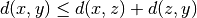
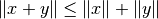
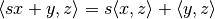

NumpyTensorSpace¶
-
class
odl.space.npy_tensors.NumpyTensorSpace(shape, dtype=None, **kwargs)[source]¶ Bases:
odl.space.base_tensors.TensorSpaceSet of tensors of arbitrary data type, implemented with NumPy.
A tensor is, in the most general sense, a multi-dimensional array that allows operations per entry (keep the rank constant), reductions / contractions (reduce the rank) and broadcasting (raises the rank). For non-numeric data type like
object, the range of valid operations is rather limited since such a set of tensors does not define a vector space. Any numeric data type, on the other hand, is considered valid for a tensor space, although certain operations - like division with integer dtype - are not guaranteed to yield reasonable results.Under these restrictions, all basic vector space operations are supported by this class, along with reductions based on arithmetic or comparison, and element-wise mathematical functions (“ufuncs”).
This class is implemented using
numpy.ndarray’s as back-end.See the Wikipedia article on tensors for further details. See also [Hac2012] “Part I Algebraic Tensors” for a rigorous treatment of tensors with a definition close to this one.
Note also that this notion of tensors is the same as in popular Deep Learning frameworks.
References
[Hac2012] Hackbusch, W. Tensor Spaces and Numerical Tensor Calculus. Springer, 2012.
- Attributes
byaxisReturn the subspace defined along one or several dimensions.
complex_dtypeThe complex dtype corresponding to this space’s
dtype.complex_spaceThe space corresponding to this space’s
complex_dtype.default_orderDefault storage order for new elements in this space:
'C'.dtypeScalar data type of each entry in an element of this space.
element_typeType of elements in this space:
NumpyTensor.examplesReturn example random vectors.
exponentExponent of the norm and the distance.
fieldScalar field of numbers for this vector space.
implName of the implementation back-end:
'numpy'.is_complexTrue if this is a space of complex tensors.
is_realTrue if this is a space of real tensors.
is_weightedReturn
Trueif the space is not weighted by constant 1.0.itemsizeSize in bytes of one entry in an element of this space.
nbytesTotal number of bytes in memory used by an element of this space.
ndimNumber of axes (=dimensions) of this space, also called “rank”.
real_dtypeThe real dtype corresponding to this space’s
dtype.real_spaceThe space corresponding to this space’s
real_dtype.shapeNumber of scalar elements per axis.
sizeTotal number of entries in an element of this space.
weightingThis space’s weighting scheme.
Methods
_dist(self, x1, x2)Return the distance between
x1andx2._divide(self, x1, x2, out)Compute the entry-wise quotient
x1 / x2._inner(self, x1, x2)Return the inner product of
x1andx2._lincomb(self, a, x1, b, x2, out)Implement the linear combination of
x1andx2._multiply(self, x1, x2, out)Compute the entry-wise product
out = x1 * x2._norm(self, x)Return the norm of
x.astype(self, dtype)Return a copy of this space with new
dtype.Return the set of data types available in this implementation.
contains_all(self, other)Test if all elements in
otherare contained in this set.contains_set(self, other)Test if
otheris a subset of this set.default_dtype([field])Return the default data type of this class for a given field.
dist(self, x1, x2)Return the distance between
x1andx2.divide(self, x1, x2[, out])Return the pointwise quotient of
x1andx2element(self[, inp, data_ptr, order])Create a new element.
inner(self, x1, x2)Return the inner product of
x1andx2.lincomb(self, a, x1[, b, x2, out])Implement
out[:] = a * x1 + b * x2.multiply(self, x1, x2[, out])Return the pointwise product of
x1andx2.norm(self, x)Return the norm of
x.one(self)Return a tensor of all ones.
zero(self)Return a tensor of all zeros.
-
__init__(self, shape, dtype=None, \*\*kwargs)[source]¶ Initialize a new instance.
- Parameters
- shapepositive int or sequence of positive ints
Number of entries per axis for elements in this space. A single integer results in a space with rank 1, i.e., 1 axis.
- dtype :
Data type of each element. Can be provided in any way the
numpy.dtypefunction understands, e.g. as built-in type or as a string. ForNone, thedefault_dtypeof this space (float64) is used.- exponentpositive float, optional
Exponent of the norm. For values other than 2.0, no inner product is defined.
This option has no impact if either
dist,normorinneris given, or ifdtypeis non-numeric.Default: 2.0
- Other Parameters
- weightingoptional
Use weighted inner product, norm, and dist. The following types are supported as
weighting:None: no weighting, i.e. weighting with1.0(default).Weighting: Use this weighting as-is. Compatibility with this space’s elements is not checked during init.float: Weighting by a constant.array-like: Pointwise weighting by an array.
This option cannot be combined with
dist,normorinner. It also cannot be used in case of non-numericdtype.- distcallable, optional
Distance function defining a metric on the space. It must accept two
NumpyTensorarguments and return a non-negative real number. SeeNotesfor mathematical requirements.By default,
dist(x, y)is calculated asnorm(x - y).This option cannot be combined with
weight,normorinner. It also cannot be used in case of non-numericdtype.- normcallable, optional
The norm implementation. It must accept a
NumpyTensorargument, return a non-negative real number. SeeNotesfor mathematical requirements.By default,
norm(x)is calculated asinner(x, x).This option cannot be combined with
weight,distorinner. It also cannot be used in case of non-numericdtype.- innercallable, optional
The inner product implementation. It must accept two
NumpyTensorarguments and return an element of the field of the space (usually real or complex number). SeeNotesfor mathematical requirements.This option cannot be combined with
weight,distornorm. It also cannot be used in case of non-numericdtype.- kwargs :
Further keyword arguments are passed to the weighting classes.
See also
odl.space.space_utils.rnconstructor for real tensor spaces
odl.space.space_utils.cnconstructor for complex tensor spaces
odl.space.space_utils.tensor_spaceconstructor for tensor spaces of arbitrary scalar data type
Notes
A distance function or metric on a space
 is a mapping
satisfying the following conditions for all space elements
:
is a mapping
satisfying the following conditions for all space elements
:,
,
,
.
A norm on a space
is a mapping
satisfying the following conditions for all
space elements : and scalars :,
,
,
.
An inner product on a space
over a field
or is a
mapping
satisfying the following conditions for all
space elements : and scalars :,
,
.
Examples
Explicit initialization with the class constructor:
>>> space = NumpyTensorSpace(3, float) >>> space rn(3) >>> space.shape (3,) >>> space.dtype dtype('float64')
A more convenient way is to use factory functions:
>>> space = odl.rn(3, weighting=[1, 2, 3]) >>> space rn(3, weighting=[1, 2, 3]) >>> space = odl.tensor_space((2, 3), dtype=int) >>> space tensor_space((2, 3), dtype=int)